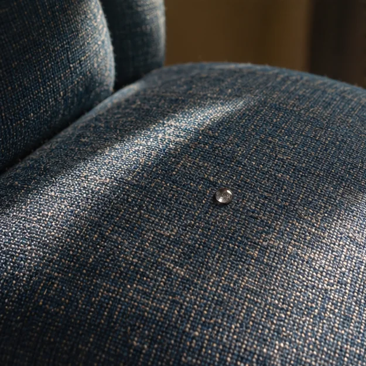
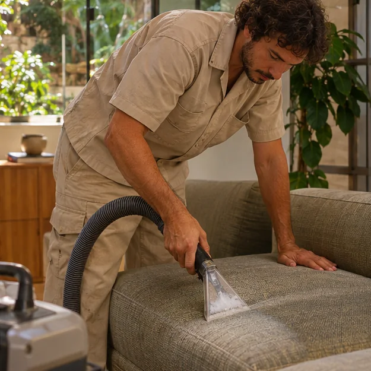

O que o tecido precisa?
Descreva o motivo da avaliação e as informações que você já tem sobre o revestimento.


O método começa com a avaliação.
O profissional confere o revestimento, as instruções do fabricante e o estado da peça antes de definir o cuidado.